Паяльник
Перед тем как начать пользоваться паяльником, его нужно подготовить к эксплуатации. Паяльник состоит из четырех основных частей:
- жало,
- нагревательный элемент,
- ручка,
- шнур питания.
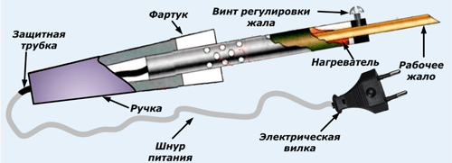
Устройство электрического паяльника с резистивным нагревом
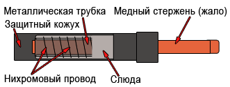
Устройство нагревательного элемента
Жало работающего паяльника нуждается в регулярном обслуживании. Иначе к нему перестает прилипать припой, и пайка превращается в мучительную процедуру.
Новый электропаяльник комплектуется чистым, необлуженным жалом. Для паяльников с нихромовым нагревательным элементом оно представляет собой медный стержень, заточенный под клин.
Это удобно для соединения проводов между собой и с выводами электрических аппаратов. Для пайки мелких деталей популярна заточка жала конусом, что позволяет не цеплять им на печатной плате соседние элементы.
Жало
Выбор подходящего для пайки жала
1. Конец жала должен обеспечивать максимальную площадь контакта между жалом паяльника и паяным соединением. Большая площадь контакта обеспечивает более эффективную передачу тепла, что позволяет быстро и качественно выполнить паяное соединение.
2. Кончик жала должен обеспечивать хороший доступ к паяному соединению. Более короткое жало позволяет точнее контролировать процесс пайки. Длинное или загнутое жало паяльника может быть необходимо для пайки печатных плат с высокой плотностью монтажа.
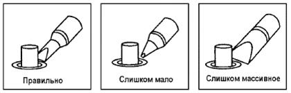
Использование и уход за жалом
1. Температура жала. Высокая температура при пайке может испортить жало. Используйте минимально возможную для пайки температуру. Превосходные характеристики поддержания температуры гарантируют производительную и эффективную пайку даже при минимальных температурах. Кроме того, это защищает спаиваемые элементы от теплового повреждения.
2. Чистка. Регулярно очищайте жало паяльника с помощью чистящей губки, так как оксиды и карбиды от припоя и флюса загрязняют конец жала паяльника. Эти примеси могут приводить к дефектным спаям и уменьшают теплопроводность жала паяльника. При постоянном использовании паяльника необходимо периодически вынимать жало из паяльника и производить его чистку от загрязнения по крайне мере один раз в неделю. Это поможет избежать заклинивания жала паяльника и снизить температуру жала при пайке.
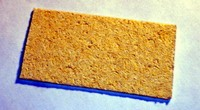
3. Никогда не оставляйте паяльник нагретым до высокой температуры на долгое время, поскольку жало паяльника начнёт покрываться окислами, которые могут существенно снизить его теплопроводность.
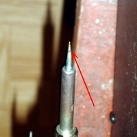
4. Вытрите, очистите жало паяльника и покройте его новым припоем. Это поможет предохранить жало от окисления.
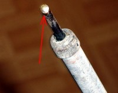
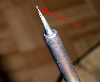
Обслуживание, проверка и чистка жала паяльника
ВНИМАНИЕ!: Никогда не используйте напильник для удаления окислов с жала паяльника.
- Нагрейте паяльник до температуры примерно 250°C.
- Когда температура стабилизируется, очистите жало чистящей губкой и проверьте его состояние.
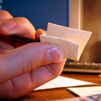
- При появлении окиси черного цвета на облуженной части жала паяльника, окуните жало в новый припой (содержащий флюс) и протрите жало чистящей губкой. Повторяйте эту процедуру до полного удаления оксидной плёнки.
- Если жало паяльника деформировано или имеется глубокая эрозия, замените жало новым.Почему нелуженым жалом невозможно работать?
Нелуженое жало не смачивается припоем, подвергается окислению, в результате чего ухудшается эффективность передачи жалом тепла. Потеря полуды жала вызвана:
- не производилось покрытие жала паяльника свежим припоем по окончании пайки;
- перегрев жала;
- недостаток флюса при пайке;
- чистка жала паяльника грязной или сухой губкой, или тканью (всегда используйте чистую, увлаженную специальную губку без содержания серы);
- наличие примеси в припое, загрязнение поверхности жала или поверхностей спаиваемых деталей.
Как восстановить полуду жала
1. Извлеките жало из паяльника, предварительно дав ему остыть.
2. Удалите нагар и окись, с облуженной части жала паяльника при помощи пенополиуретановой губки с размером абразива 80 или тканевой наждачной шкурки размером абразива 100.
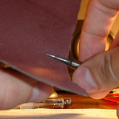
3. Оберните зачищенную область жала паяльника проволочным припоем с канифольной сердцевиной, установите жало в паяльник и включите.
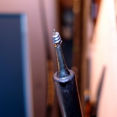
ЗАМЕЧАНИЕ: надлежащий ежедневный уход предотвращает утрату жалом полуды!
Продление срока службы жала
- Облуживайте жало паяльника до и после каждого использования. Это защитит жало от окисления и продлит срок его службы.
- Выбирайте минимальную достаточную для работы температуру. Более низкая температура снижает окисление и менее опасна для соединяемых компонентов.
- Используйте прецизионные жала паяльника только тогда, когда в этом есть необходимость. Покрытие на прецизионных жалах менее долговечно, чем у более массивных жал.
- Используйте жало только по назначению. Изгиб жала может привести к трещине покрытия и сокращению срока его службы.
- Используйте для работы наименее активированный флюс. Более активированный флюс оказывает большее разъедающее действие на покрытие жала паяльника.
- Для продления срока службы жала, если не используете прибор, выключайте его. Типичное время разогрева жала паяльника до температуры плавления припоя – около 30 секунд.
- Не давите на жало паяльника. Большее давление не увеличивает количество тепла. Для улучшения передачи тепла используйте припой в качестве теплового моста между жалом паяльника и швом пайки.
- Раковины на жале паяльника затрудняют стекание припоя в место пайки, ухудшают тепловой контакт с ним и, следовательно, замедляют процесс пайки. Придавать жалу паяльника нужную форму следует ковкой и лишь немного можно подправить напильником. Наклеп уменьшает интенсивность растворения меди в припое и замедляет образование раковин.
Нагревательный элемент
Для долгой службы этой части паяльника категорически нельзя допускать попадание на него жидкостей и избегать механических повреждений.
- Не допускать попадание флюса. Для этого не следует держать паяльник жалом вверх
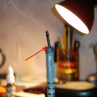
- Не охлаждать паяльник в воде или снеге. Пары воды попадут на нагревательный элемент, от чего он может лопнуть
- Если всё же жало прикипело и не вытаскивается из паяльника, то доставать его не следует, тем более прилагая силу
Ручка
Ручка должна быть целой, без механических повреждений. Она не должна сильно нагреваться и тем более плавиться при работе нагревательного элемента
Шнур питания
Для личной безопасности следует к этому вопросу отнестись серьезно!
1. Шнур питания не должен болтаться и прокручиваться в ручке. Если нет специального фиксатора, можно набить отверстие ручки ватой (естественно не полностью)
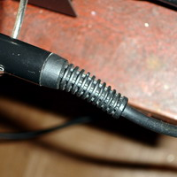
2. Не допускайте нарушения изоляции провода, обратите внимание на качество изоляции и сечение провода. Если таковые нарушения имеются, то или заизолируйте место нарушения изолентой, а ещё лучшее вообще заменить провод на новый
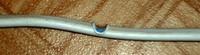
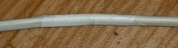
3. Штепсельная вилка должна быть так же без механических повреждений и плотно сидеть в розетке (не болтаться). Если такового не имеется, то вилку так же следует заменить
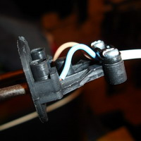
Внимание!: категорически не рекомендуется при выключении паяльника (да и любого устройства) тянуть за провод. При монтаже провода в устройстве или в разъеме (например, штепсельная вилка) не допускать натяга провода.
Паяльник
Какой мощности нужен паяльник?
Мощность выбирается исходя из того, что паять. Маломощный паяльник не разогреет, слишком мощный перегреет. Чем массивнее деталь, тем бОльшая мощность нужна.
Для микро монтажа (маленькие микросхемки для поверхностного монтажа например) используют паяльники 4, 6, 12, 18 Вт.
Для печатного монтажа используют паяльники мощностью 25, 30, 35, 40, 50, 60 Вт.
Для объемного монтажа (пайка корпусов, шасси и т.п) используют паяльники мощностью 50, 60, 75, 90, 100,120 Вт.
Для обучения пайке оптимальным будет выбор паяльника 25–40 Вт.
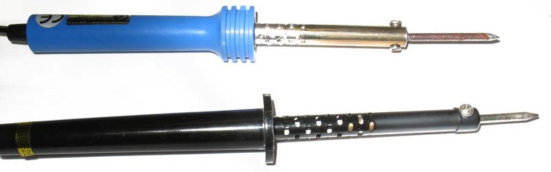
Сверху китайский паяльник CT-BRAND 30 Вт. Внизу паzльник производства г. Псков 25 Вт. У обоих паяльников жала не родные.
Паяльная станция
В обычном паяльнике температура жала не задается, просто паяльник сконструирован так, что она находится где то в пределах 250 – 400 градусов Цельсия. В некоторых задачах такой разброс температуры жала недопустим, поэтому у паяльников в паяльных станциях около жала вмонтирован термодатчик. Паяльная станция отслеживает текущую температуру жала и регулирует напряжение на паяльнике, что бы температура соответствовала заданной.
Паяльную станцию стоит покупать тогда, когда станет понятно, что нужна именно она. Для обучения пайке достаточно простого паяльника.
Также у паяльной станции паяльник питается низким напряжением (12, 24, 36 вольт) через трансформатор. Назначение этому двоякое.
- При пайке в заземлённых браслетах безопасны только паяльники, питающиеся низким напряжением.
- Кроме того, паяльник гальванически развязывается от сети. Гальваническая развязка не даёт проникнуть всяческим наводкам и импульсам из сети через паяльник в паяемый узел. Особенно чувствительны к этому туннельные диоды.
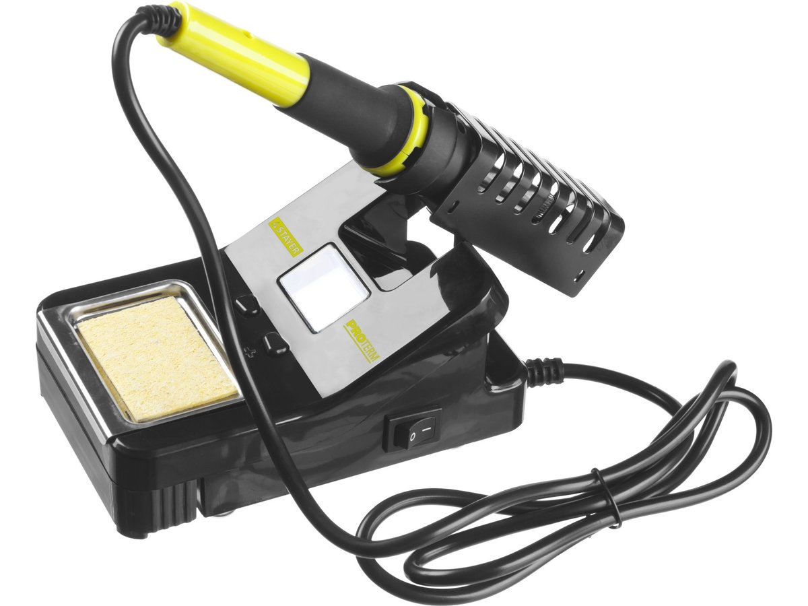
Паяльная станция
У некоторых паяльников, обычно отечественных, жало медное – красноватого цвета. А у китайских оно белое. Почему так?
Дело в том что на постсоветском пространстве среди любителей всё еще распространена технология пайки медными жалами, в то время как за рубежом давно перешли на необгораемые жала.
Покупать для начала желательно паяльник именно с медным жалом. (белые жала тоже медные, только покрыты тонким слоем никеля). В радиотоварах обычно продаются запасные медные жала, поэтому у паяльника можно извлечь белое жало, и вставить медное.
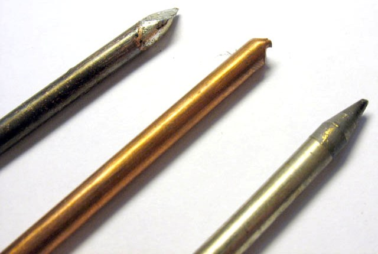
Слева направо.
1. Медное облуженое жало. Чернота – образовавшаяся из-за нагрева окись меди.
2. Новое медное незаточенное жало.
3.Необгораемое («вечное») жало на конус.
А зачем придумали не обгораемые жала?
Дело в том, что флюс «кушает» не только окислы на паяемой поверхности, но еще и материал жала. Также медь немного растворяется в припое, поэтому при длительной работе на медном жале образуются каверны, ямки и т.д. в результате чего оно теряет свою геометрическую форму. Из-за этого в процессе работы приходится регулярно затачивать медное жало. При работе с канифолью затачивать жало приходится раз в неделю – месяц, в зависимости от интенсивности пайки. При работе с припоем Radiel – fondam с бесканифольным флюсом пришлось затачивать жало чуть ли не каждый час.
Для борьбы с этим явлением придумали «необгораемое» жало, также иногда называемое «вечным». Это медное жало покрытое тонким слоем никеля. Никель перекрывает собой доступ к меди, защищая ее. Но за это приходится платить – необгораемое жало практически не смачивается припоем, поэтому припой подается проволочкой непосредственно в место пайки, а не таскается на жале.
Какие еще бывают паяльники?
Газовые паяльники – тепло получается при сгорании газа из встроенной емкости. Используются для пайки в полевых условиях.
Паяльник типа «момент». На фото самодельный паяльник типа «момент»:
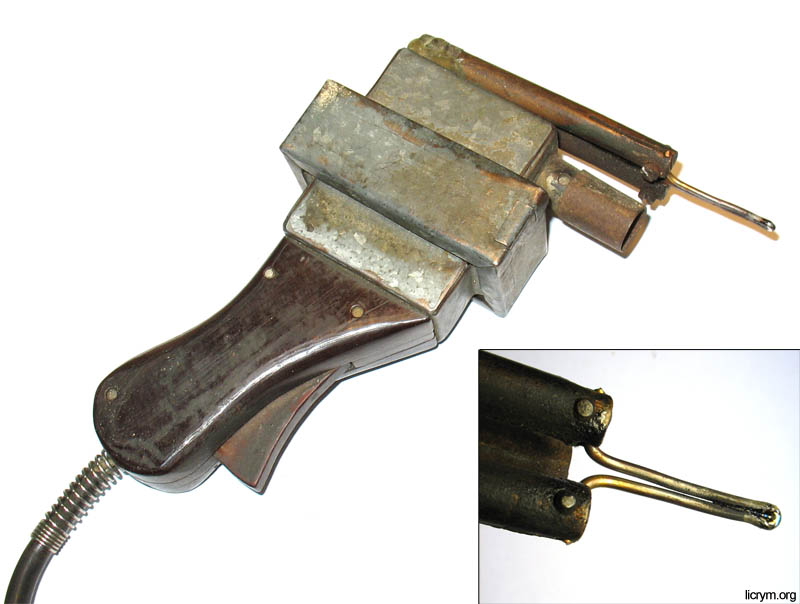
Нагревательным элементом служит медная проволока, которая является и жалом. Температура регулируется длительностью нажатия на курок включения. Главное достоинство такого паяльника, это то, что он нагревается до рабочей температуры за 1–2 с. Недостатков много – габариты, вес, малый срок службы жала (около 60 часов). Такой паяльник используют в основном там, где нужно изредка что либо подпаять, при этом нет желания тратить время на разогрев нормального паяльника.
Новый паяльник с медным жалом.
Если жало нового паяльника не заточено – то затачиваем его, придавая необходимую форму. Форма заточки – дело индивидуальное.
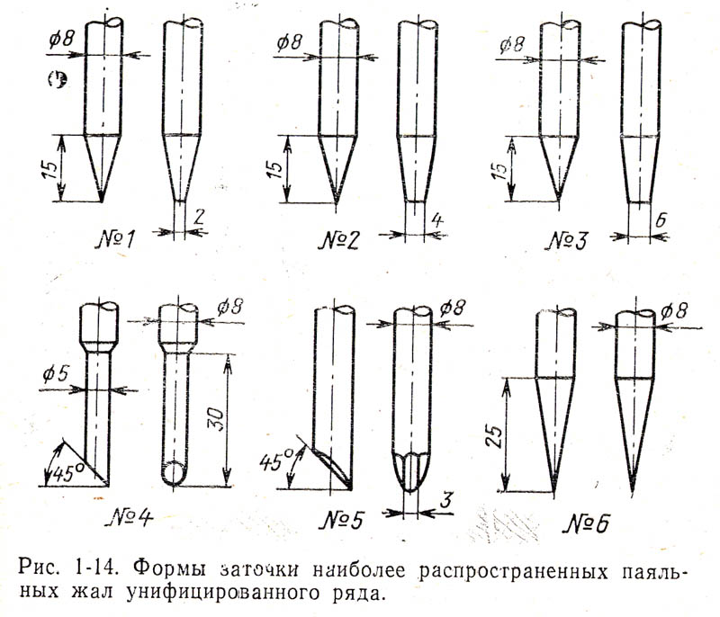
После того как заточили жало – нам необходимо его облудить – покрыть слоем припоя, иначе припой к жалу приставать не будет. Для этого окунем жало паяльника в канифоль, затем расплавим небольшое количество припоя, и разотрем его по поверхности жала на деревяшке (можно использовать неокрашенную картонку). В итоге рабочая поверхность жала должна быть покрыта блестящим слоем серебристого металла.
Новый паяльник с необгораемым жалом.
Никаких подготовительных операций не требуется. Единственное – при работе с паяльником грязь с жала счищают проводя по вискозной губке (она чем то напоминает поролон) смоченной в воде. Губка обычно идет в комплекте с подставкой. Если нет губки – можно использовать любой другой негорючий материал (вплоть до туалетной бумаги).
Подготовка паяльника к монтажным работам
Перед началом монтажа радиоустройства необходимо тщательно подготовить паяльник. Обычно это делают с помощью напильника или точила, но опыт показывает, что лучше произвести его отковку. Получающийся на поверхности наклеп позволяет дольше сохранить форму жала, т. к. меньше выгорает металл, из которого оно сделано. После необходимо залудить рабочую часть жала.
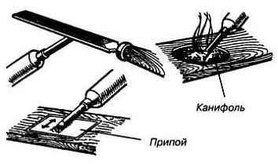
Залуживание жала паяльника
Нагрев паяльник, опускают рабочую часть жала в канифоль для предохранения поверхности меди от окисления. Как только жало нагреется до температуры плавления припоя, конец жала полностью покрывают припоем.
Для распайки деталей на печатных платах, как правило, пользуются паяльником мощностью не более 40 Вт и припоями с температурой плавления 130…180 °C. Радиолюбительская практика показывает, что если производить распайку печатных плат паяльником мощностью 40 Вт и рассчитанным на 220 В, то лучше его питать напряжением 160…180 В. В этом случае, при использовании обычных припоев (типа ПОС-61), жало паяльника меньше покрывается окалиной, не так быстро выгорает, температура нагрева соответствует температуре плавления припоя и, как результат, получается хорошая пайка.
Уход за электропаяльником с нихромовым нагревателем
Установка жала в паяльник зависит от его конструкции. В первом случае оно удерживается в корпусе за счет слегка расплющенной части, при этом вставляется и вынимается из него с небольшим усилием. Во втором – крепится винтом на корпусе паяльника. Этот способ предпочтительнее. Оба способа крепления имеют особенности, влияющие на методы ухода за жалом паяльника.
При длительной эксплуатации паяльника между стенками его внутренней части и жалом образуется окалина, ухудшающая теплопередачу. Если ее вовремя правильно не удалять, то разобрать этот узел будет невозможно без поломки. Жало периодически вынимают, очищают внутреннюю поверхность мелкой наждачной бумагой и вставляют обратно. При креплении винтом это сделать проще, только винт нужно иногда полностью выкручивать и закручивать обратно. Иначе сдвинуть его с места без поломки не удастся. При простой фиксации жала в корпусе приходится с усилием тащить его наружу. Иногда из этой затеи ничего не выходит, а попытки любой ценой добиться своего приводят к поломке паяльника. Поэтому, чем чаще вы будете доставать из паяльника жало и чистить его, тем дольше сохранится их разъемное соединение.
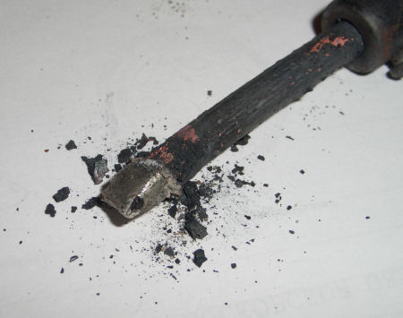
Другая проблема, возникающая при снятии жала, тоже приводит к выходу паяльника из строя. Дело в том, что нагревательный элемент наматывается нихромовым проводом на трубку из миканита. Внутрь этой трубки и вставляется жало с минимально возможным зазором, чтобы обеспечить максимальную теплопередачу. Если нагар, образовавшийся при работе, плотно заблокировал эти детали вместе, то разборка приведет к разрыву миканитовой изоляции и замыканию части витков обмотки между собой. Заметить это трудно, а при дальнейшей эксплуатации из-за уменьшения сопротивления обмотки потребляемый паяльником ток увеличится, нихром перегреется и сгорит. Поэтому, если вы долго не доставали жало из паяльника или оно сопротивляется при извлечении – лучше оставьте все, как есть.
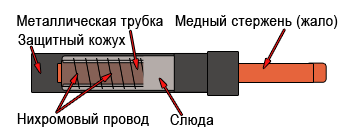
Размер части жала, помещаемой внутрь паяльника, при простой установке ограничивается фиксирующими выступами. При использовании для этой цели винта на корпусе нужно правильно установить глубину установки. Если жало будет слишком глубоко, то площадь нагрева увеличивается, а теплоотдача уменьшится, так как снаружи окажется его меньшая часть. В результате обгорать оно будет быстрее. К тому же канифоль или жир при пайке будут сгорать раньше, чем окажутся в нужном месте.
Еще одной неисправностью, характерной для электропаяльников с нихромовым нагревателем, является нарушение изоляции между корпусом и нагревательным элементом. Обычно повреждение происходит в начале или конце обмотки, то есть, ближе к одному из выводов штепсельной вилки. Наличие «фазы» на корпусе паяльника при этом зависит от ее положения в розетке. Определить наличие повреждения можно, используя однополюсный указатель напряжения. Для этого нужно коснуться им корпуса работающего паяльника, затем перевернуть вилку в розетке и повторить проверку. Если указатель определит наличие «фазы» — паяльник придется сразу выбросить. Можно проверить состояние изоляции тестером или мультиметром, измерив сопротивление между корпусом и любым выводом штепсельной вилки.
На работу замыкание никак не влияет, но при одновременном касании металлических предметов жалом и рукой работающий получает удар током. К тому же это может привести к выходу из строя электронных компонентов. При их припаивании можно вывести из строя и все полупроводниковые элементы устройства. При касании жалом заземленных металлических предметов паяльник сам выходит из строя, так как внутри него происходит короткое замыкание. Если паяльник работает от понижающего трансформатора, то повреждение его изоляции не влияет на электробезопасность.
Электропаяльник не рекомендуется надолго оставлять включенным, не выполняя при этом никаких работ, так как при этом жало обгорает. Если часто возникают ситуации, когда нужно приостановить работу, а потом быстро ее возобновить, можно собрать небольшое устройство с переключателем и диодом. При необходимости на некоторое время перевести паяльник в «горячий резерв», питание на него с помощью переключателя подается через диод, и он начинает работать с мощностью, в два раза меньшей. Устройство удобно разместить в корпусе удлинителя, имеющего штатный выключатель. При этом можно сделать переключаемой одну розетку, а остальные использовать по своему усмотрению, например, для подключения ремонтируемой аппаратуры, осциллографа или других измерительных приборов. Розетку для паяльника можно пометить маркером или другими доступными способами.
Иногда устанавливают концевой выключатель на подставке, переключающий питание положенного на нее паяльника через диод. Этот способ имеет недостаток: каждый раз, взяв паяльник с подставки, придется ждать, когда он подогреется до необходимой температуры. Это существенно замедляет пайку.
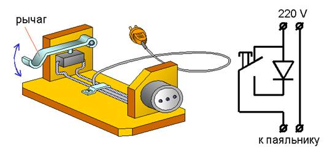
Подставка для паяльника с концевым выключателем
Можно воспользоваться и регулятором мощности паяльника. Его можно приобрести или изготовить самостоятельно. Но в некоторых случаях (например, для пайки проводов в соединительных коробках) это устройство будет лишним. Для работы с электронными компонентами регулировка температуры жала имеет большую ценность, поэтому лучше использовать для этих целей керамические паяльники или паяльные станции, имеющие регулировку и стабилизацию температуры жала, а не просто изменяющие потребляемую паяльником мощность.
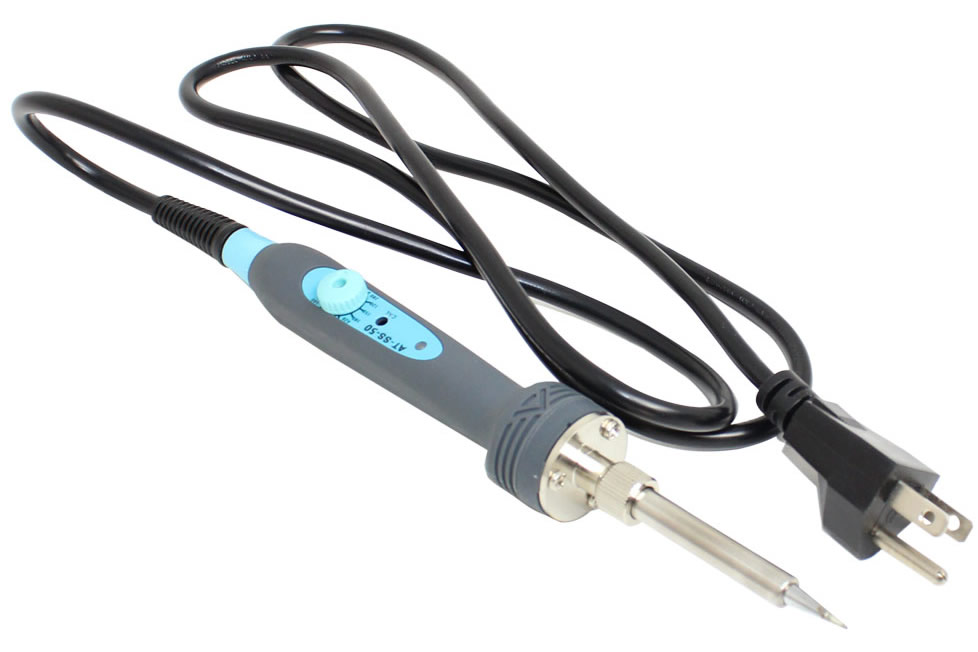
Паяльник Atten SS-50 с регулятором температуры
Как правильно залудить медное жало у паяльника
Перед использованием жало нужно залудить. Иначе припой не будет к нему приставать и пайка станет невозможной. Рассмотрим способы, как правильно залудить жало для паяльника. Для этого процесса понадобятся:
- канифоль;
- припой;
- деревянный брусок;
- наждачная бумага с мелким зерном или напильник.
Рабочую поверхность нового жала зачищаем наждачной бумагой, положенной на брусок, до блеска. Если жало побывало в эксплуатации, его поверхность неровная и изрыта кавернами, то перед облуживанием его придется выровнять напильником. Лучше для этого вынуть его из паяльника и зажать в тиски. Если по вышеописанным причинам демонтаж жала невозможен, то можно обойтись и без этого. Считается, что плоскость для пайки лучше формировать не напильником, а отковыванием, постепенно расплющивая кончик жала молотком. Процесс этот более трудоемкий и требует определенных навыков, но в результате припой будет меньше вымывать медь их жала. Выбоины в нем будут образовываться медленнее, и повторное лужение потребуется не скоро.
Теперь устанавливаем жало на место и включаем паяльник в сеть. При этом периодически контролируем нагрев, касаясь канифоли. Как только она начинает плавиться, покрываем ею всю рабочую поверхность. В процессе выгорания канифоли процесс периодически повторяем, ожидая момента, когда температура станет достаточной для плавления припоя. Как только это произойдет, покрываем припоем всю рабочую поверхность жала и стряхиваем с него излишки.
Поверхность нужно полностью залудить. Если есть пропуски, или жало не лудится, значит, окисел был снят некачественно. Чтобы не остужать паяльник и не зачищать поверхность снова, применяем небольшую хитрость.
На брусок кладем наждачную бумагу, а на нее – кусочек канифоли. Плавим его паяльником и зачищаем рабочую поверхность жала наждачкой в среде канифоли. Периодически добавляем припой. Этот метод годится и для того, чтобы оперативно восстановить рабочую поверхность. Как только на ней появляются необлуженные зоны, рекомендуется поправить ситуацию с помощью наждачки и канифоли. Это будет лучше, чем потом выравнивать поверхность напильником.
Как облудить необгораемое жало
Обычное медное жало имеет недостатки: оно понемногу выгорает, требуя частого повторения вышеописанных процедур по очистке. С него невозможно убрать весь припой, что требуется для пайки корпусов некоторых микросхем.
Этих недостатков лишены необгораемые жала, поверхность которых покрыта слоем никеля. Но за ними нужен особый уход. Слой покрытия тонкий, его нельзя царапать. Поэтому никелированные жала нельзя чистить напильником, надфилем и даже наждачной бумагой. Нельзя даже стряхивать с них припой ударами о подставку паяльника. Если слой покрытия будет поврежден, то из-под него будет вымываться медь и жало придет в негодность. Поэтому и облудить его так, как медное, не получится.
Для того, чтобы залудить необгораемое жало, потребуются:
- кусок хлопчатобумажной ткани (можно использовать старое полотенце);
- канифоль;
- припой.
Ткань нужно обильно смочить в воде и отжать, а в баночку с канифолью кинуть небольшой кусочек припоя. Прогреть паяльник, затем энергично потереть его жалом о мокрую ткань, стирая окислы. Затем быстро окунуть его в канифоль, расплавляя в ней кусочек припоя. Жало лудится в среде канифоли, которая растворяет остатки окислов. После этого его нужно протереть о ту же ткань, что использовалась вначале.
Для очистки необгораемых жал в процессе работы предназначены специальные целлюлозные губки, которые продаются в магазинах электроники. Губку перед использованием нужно пропитать водой, отжав излишки. Лучше использовать глицерин, при этом она не будет высыхать. При работе нужно периодически протирать жало паяльника о губку, удаляя окислы и излишки припоя.
Еще можно использовать для этих целей проволочную губку (мочалу) из латуни или меди. Ее также продают в радиолюбительских магазинах. Подойдет и мочалка для мытья посуды из нержавеющей стали, но только мягкая, чтобы не царапала жало.
Но все эти способы могут не помочь, если паяльник с необгораемым жалом перегревается. Его температура не должна превышать 300 ?С. Поэтому использовать их стоит только в паяльниках, имеющих регулировку температуры со стабилизацией.
Регуляторы мощности здесь не помогут, так как трудно подобрать его режим работы. Температура в зависимости от интенсивности пайки постоянно изменяется, когда паяльник бездействует на подставке, она максимальна, когда плавит припой – понижается. Напряжение в сети тоже может изменяться и влиять на температуру. В керамических паяльниках и паяльных станциях организована регулировка с использованием датчика, встроенного в паяльник. Начальная температура задается пользователем, а устройство управления ее поддерживает без его участия. Также не рекомендуется долго держать нагретое необгораемое жало без припоя.
Еще одно достоинство необгораемых жал, предназначенных для керамических паяльников и паяльных станций – они съемные и легко меняются. Производителями выпускается широкий ассортимент жал различной формы и размеров, предназначенных для выполнения разных видов работ. Владельцам паяльников с нихромовым нагревателем приходится идти на ухищрения, чтобы сделать их универсальными: придумывать какие-то вставки, наматывать на жало толстую медную проволоку. Это не делает процесс пайки удобнее, скорее – наоборот. А если вспомнить, что поменять жало у такого паяльника порой не так-то просто, то об использовании различных форм греющих поверхностей для него стоит позабыть совсем.
Достоинства и недостатки электропаяльников
Керамические паяльники компактны и экономичны. Их нагревательный элемент встроен внутрь жала и обеспечивает его быстрый разогрев. Но эти нагревательные элементы не выносят резких перепадов температур, поэтому их лучше резко не охлаждать. Также не стоит использовать жала, на которые они не рассчитаны: изменение температурного режима работы мгновенно выведет нагревательный элемент из строя.
Самым универсальным инструментом для паяния являются, конечно, паяльные станции. В них можно менять жала, плавно регулировать их температуру. Большее их количество работают на пониженном напряжении и гальванически развязаны с питающей сетью, а также имеют возможность подключения заземления к паяльнику. Совместно с использованием заземляющего браслета это позволяет предотвратить выход из строя радиоэлектронных компонентов от статического электричества и сетевых наводок.
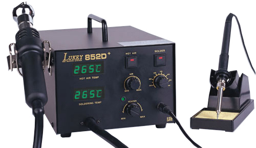
Есть у паяльных станций лишь один недостаток: они занимают больше места на столе, чем обычный паяльник, и с ними трудно работать в полевых условиях. Поэтому, выбирая, какой паяльник лучше, нужно ориентироваться на то, что вы будете паять, где и как часто. А от выбора паяльника будет зависеть, какое жало вам придется эксплуатировать.
Источники:
kp-pr.ru - Подготовка паяльника к монтажным работам
voltland.ru - Как залудить жало паяльника правильно: советы и рекомендации